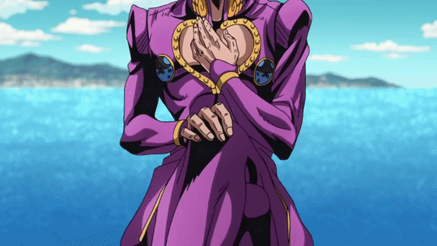
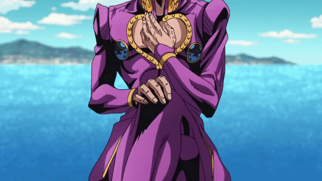
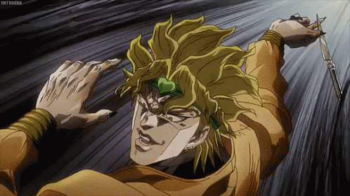
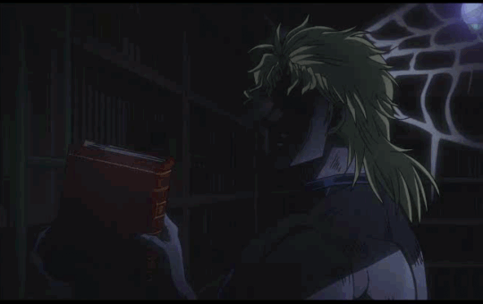
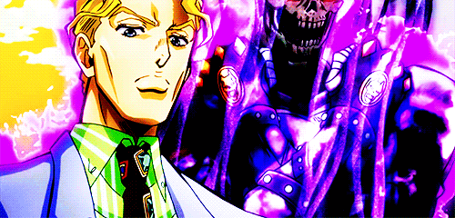
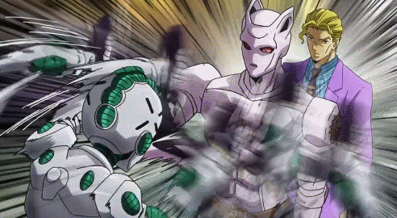
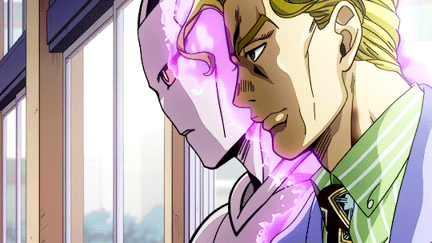
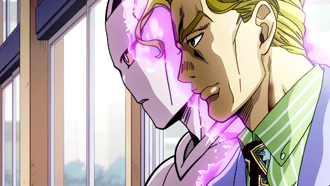

Welcome you fools, it is Iiii, Diiioooo, from the after life, arriving to take over your precious so called "internet". The fools down here are no better then you mortals up there. Since there is this so called "wifi" everywhere, even after death; I, Diiooo, thought I would conquer the so called "web" and make you bow down to your master.
So many events have happen ever since my death. It turns out, I, Diiiooo, have a son!!!!
 

I know I grew fond of many women, but many times I would send them to their graves. What a pity, but a blessing at the same time that I have a son. I just hope that one day we may see each other in the afterlife.

There is one thing though that really crawls under my skin still.....

I THOUGHT I KILLED THAT JOESTAR!!!!!!!!!
I remember facing the old man a while back on my dreadful moments

I also remembering finishing the fool with a knife
This is sickening to the corpse!
As I stand in darkness, I also got to witness a rather great foe that has merged from the shadows..

Killer Queen, was it? He is no doubt an interesting being..
yes..thats it..
  

An interesting fellow indeed...very intriguing..
But of coarse the fool lost, he is no greater than I am. No one well dare outmatch me...